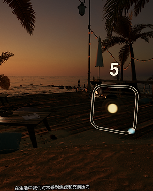
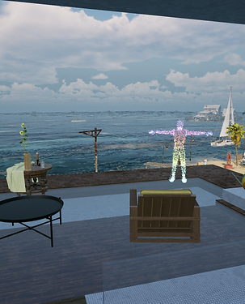

Virtual reality for mental health


Project leaders
Quan Zhang
Overview
Our project focuses on utilizing a state-of-the-art virtual reality depression intervention program developed by the Tsinghua University Digital Mental Health Joint Lab team. We, as a collaborative interdisciplinary team of researchers from esteemed medical and research institutions such as Tsinghua University Institute of Applied Arts and Sciences, Tsinghua University Vanke School of Public Health and Wellness, Tsinghua University Department of Biomedical Engineering, Beijing Brain Science and Brain-like Research Center, Tsinghua University Hospital, and Wulituo Hospital, have come together to create this groundbreaking intervention.
Through the integration of various digital technologies, including a new photoelectric sensing mechanism and flexible electrophysiological monitoring technology, we have built a digital virtual reality intervention platform. Our primary goal is to improve mental health and well-being by providing individuals with an immersive and interactive virtual reality experience.
With our project, we aim to harness the transformative potential of virtual reality as a therapeutic tool. By immersing individuals in a virtual environment, we can address depression and promote mental well-being in a unique and effective way. Our collaborative efforts combine cutting-edge technology with scientific research, driving forward the field of digital mental health interventions and paving the way for innovative approaches to mental health care.